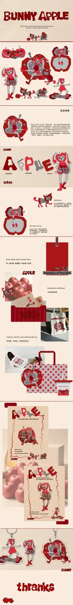
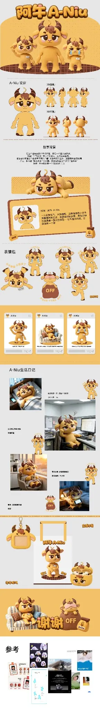
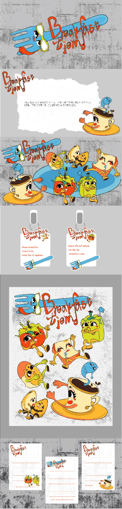
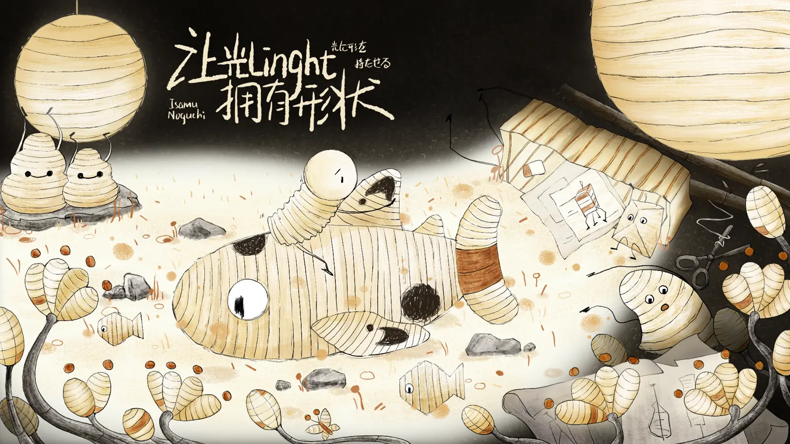
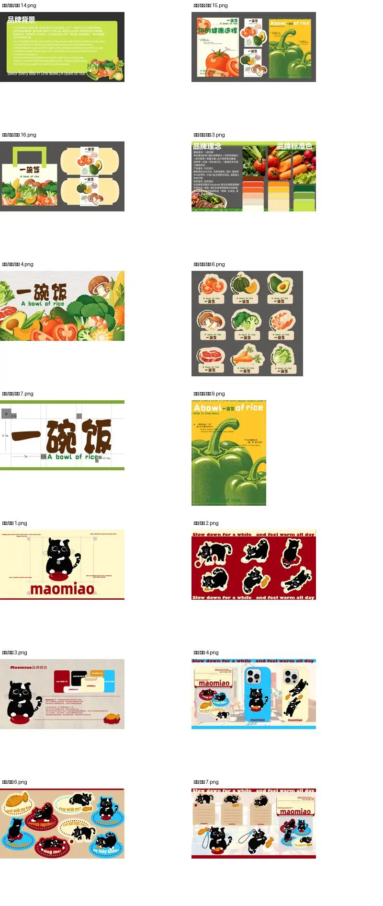
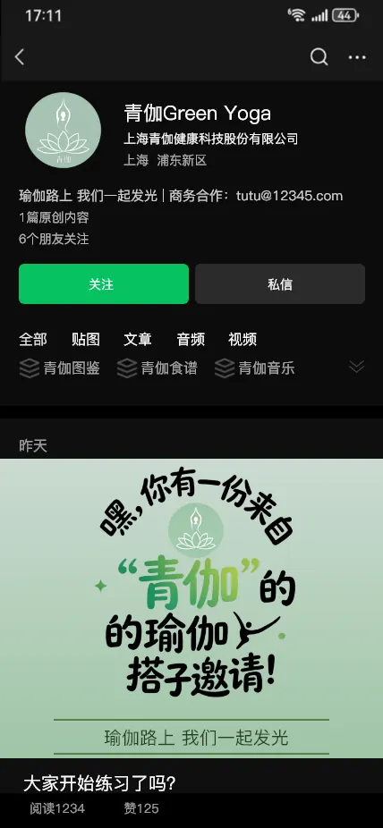
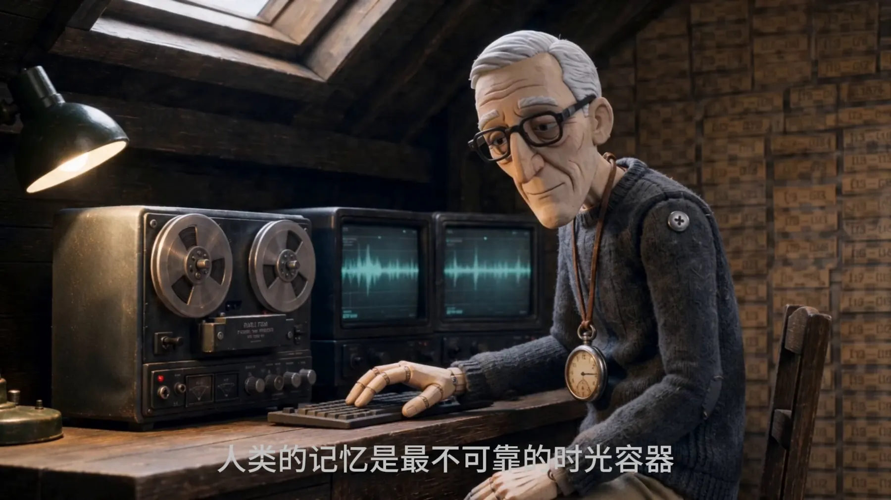
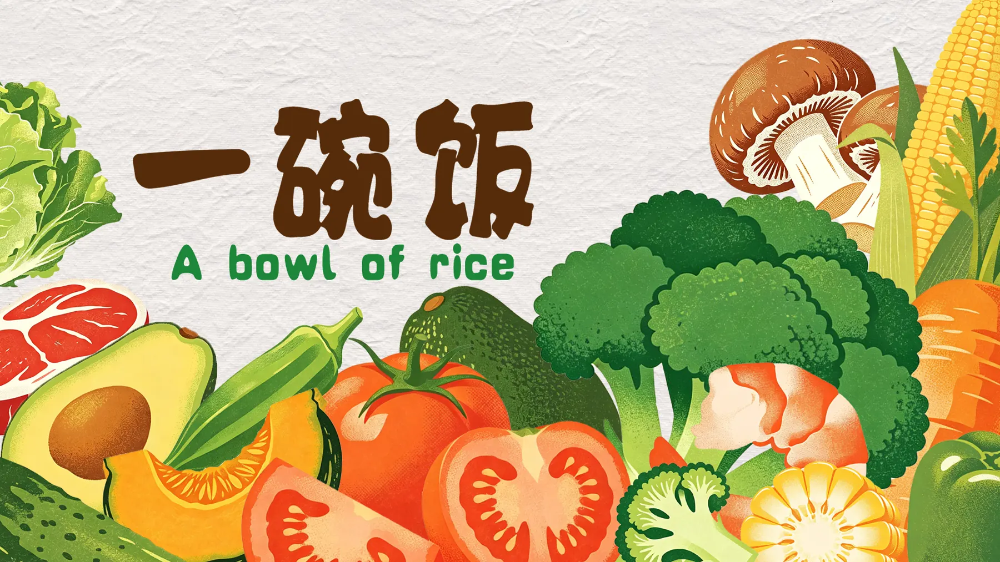

BUNNY APPLE
Brand concept · Visual identity · Packaging




Brand concept · Visual identity · Packaging
Character design · Expression · Merchandise
Illustration · Poster · Visual application

Character illustration · Visual extension

Social content · Visual communication · XD

Animation · Visual storytelling · Film
Illustration · Art direction · Team project
Character design · Visual presentation

Food illustration · Graphic study
SELECT A PROJECT TO VIEW ITS DETAILS ↗
负责商品主图、详情页、活动海报与线下物料；参与营销活动拍摄、素材剪辑及店铺视觉规范执行。
设计迎新易拉宝、主题海报等活动视觉物料，并参与校园新闻稿撰写、校对与排版。
负责选题策划、脚本、人像拍摄修图、图文排版与封面标题设计；简历记录单条最高播放量 9.5 万。